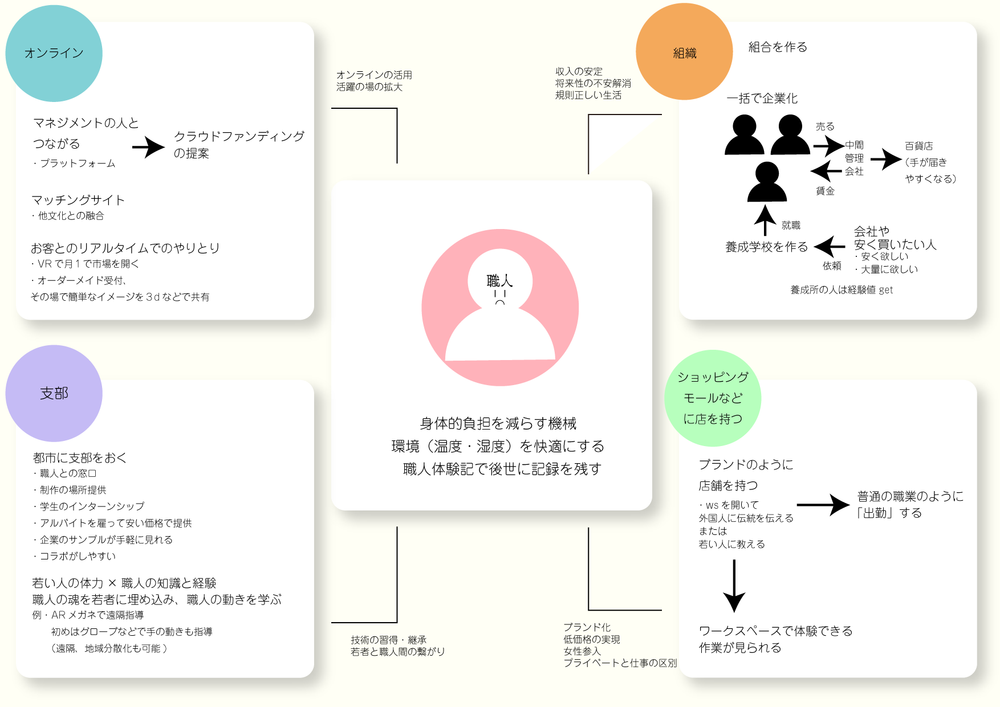
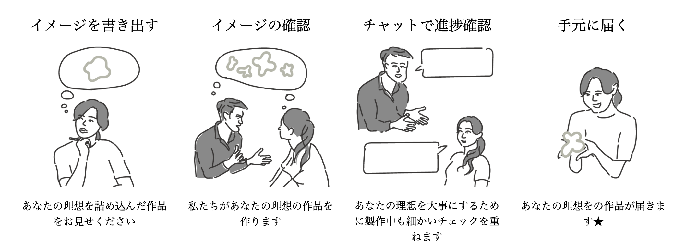
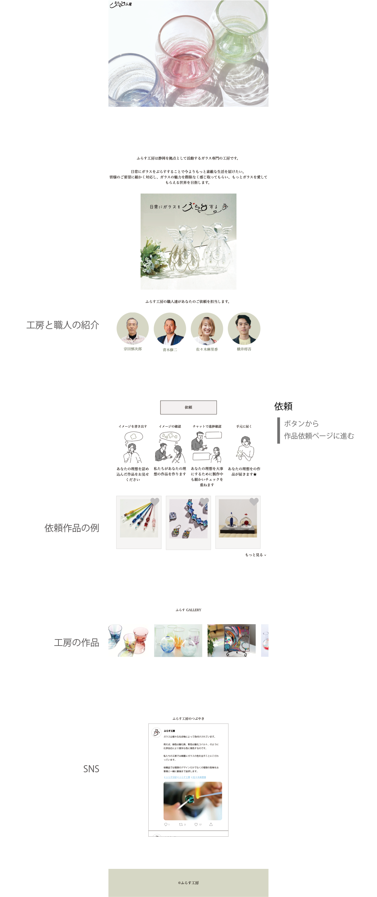
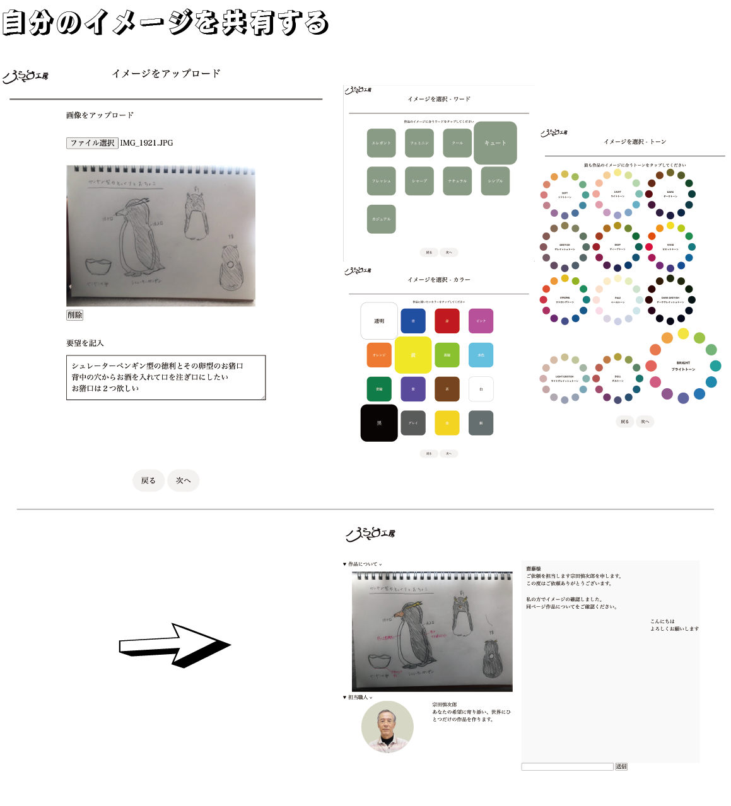
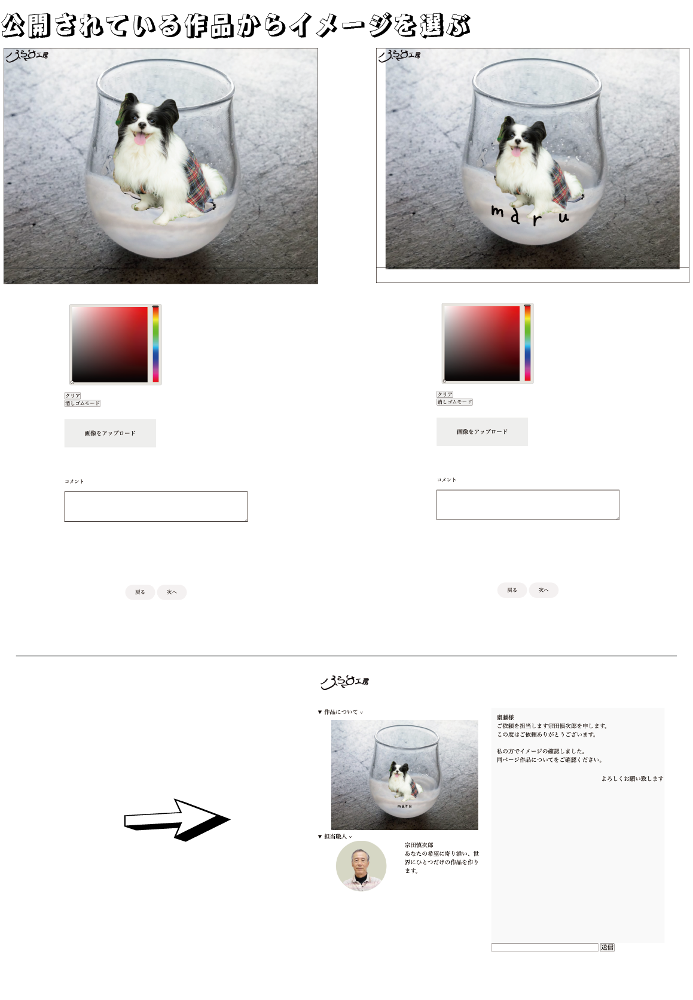

---Website design---
ふらす工房
本当に欲しい作品と出会うための
職人とお客さんのマッチングサイト
◴ 2021/10/4-2022/1/24 ✎ Illustrator Photoshop HTML5 CSS3 JavaScript


---Website design---
ふらす工房
本当に欲しい作品と出会うための
職人とお客さんのマッチングサイト
◴ 2021/10/4-2022/1/24
>✎ Illustrator Photoshop HTML5 CSS3 JavaScript
PROCESS
「バックキャスティングで10年後の理想的な職人業界の社会像想像し、理想の未来を実現するためのシステム・技術を考える」
職人の抱える課題とそれを解決できる方法
上図の左上オンライン伝統工芸の課題として以下に着目した
- 作品の必要性・需要がない
- 職人のこだわりと金儲けが矛盾している
- 最新のニーズがつかめない
- ブランド力、販売チャンネルが乏しい
これらの伝統工芸の課題から10年後の職人社会の理想を「顧客のニーズにあった商品が生まれる環境」とする
職人の作品を売るだけでなく顧客からのニーズに柔軟に対応できマッチングサイト
イラスト入れる
WORK
日本語の「ガラス」の元になったオランダ語「glass」（発音は「フラス」）からオーダーメイドで顧客のニーズに応え、ガラスの魅力をもっと世の中に広める
ふらす工房サイトの使い方
 ある程度依頼したい内容が定まっているお客さん用
[１]作品イメージの画像を添付、詳細を記入する
[２]作品のイメージ、使用したいカラー・トーン等を選択する
[３]作品イメージを職人と共有した後は担当の職人が決まり、チャットのやり取りで作品の出来具合を確認しながら制作を進める
ゼロからものを生み出すことが難しく既存の作品にアレンジを加えて進めていきたいお客さん用
[１]公開された過去の依頼作品や工房の作品から気に入ったものを選ぶ
[２]作品画像の上に画像を貼り付けたり書き込みをしてイメージを作り上げる
[３]作品イメージを職人と共有した後は担当の職人が決まり、チャットのやり取りで作品の出来具合を確認しながら制作を進める
今後の課題